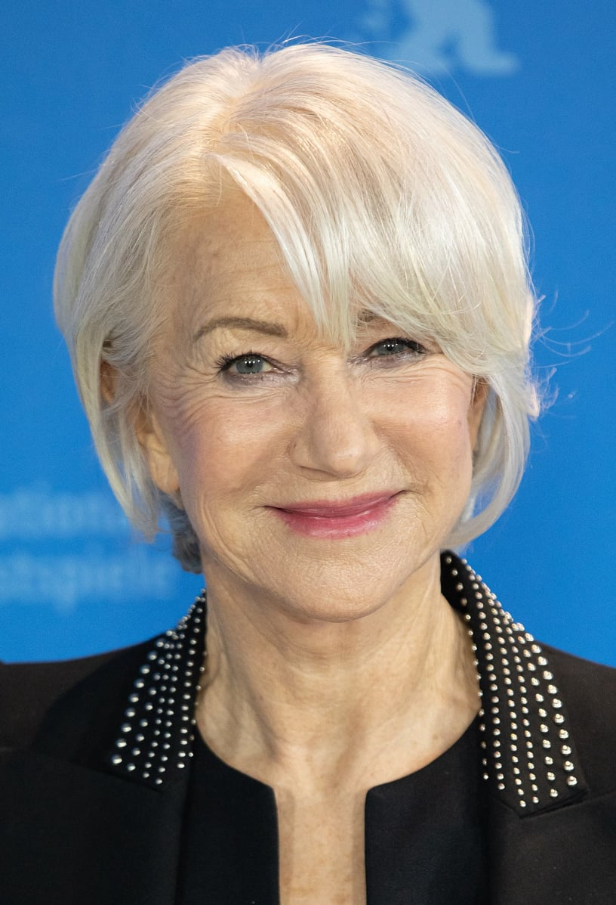

Helen Mirren
Born: 26 July 1945
Age:
Years Active: 1963-present
Dame Helen Mirren (born Ilyena Lydia Mironoff; 26 July 1945) is an English actor. Regarded amongst Britain's greatest actors, Mirren is the recipient of several accolades including an Academy Award, three Golden Globe Awards, four BAFTA Awards, five Emmy Awards, a Tony Award, two Cannes Film Festival Awards, a Volpi Cup and a Laurence Olivier Award. She is the only person to have achieved both the US and UK Triple Crowns of Acting, and has also received the BAFTA Fellowship, Honorary Golden Bear, Screen Actors Guild Life Achievement Award, and the Cecil B. DeMille Award. Mirren was made a Dame Commander of the Order of the British Empire (DBE) by Queen Elizabeth II in 2003.
Mirren started her career at the age of 18 as a performer with the National Youth Theatre, where she played Cleopatra in Antony and Cleopatra (1965). She later joined the Royal Shakespeare Company and made her West End stage debut in 1975. She went on to receive the Laurence Olivier Award for Best Actress for playing Elizabeth II in the Peter Morgan play The Audience (2013). She reprised the role on Broadway and won the Tony Award for Best Actress in a Play. She was Tony-nominated for A Month in the Country (1995) and The Dance of Death (2002).
Mirren's first credited film role was in Herostratus (1967) and her first major role was in Age of Consent (1969). She gained further recognition for her roles in O Lucky Man! (1973), Caligula (1979), The Long Good Friday (1980), Excalibur (1981), The Mosquito Coast (1986), and The Cook, the Thief, His Wife & Her Lover (1989). Mirren has received four Academy Award nominations for her performances in The Madness of King George (1994) Gosford Park (2001), The Last Station (2009), winning the Academy Award for Best Actress for her portrayal of Elizabeth II in The Queen (2006). She went on to appear in further films such as The Tempest (2010), Hitchcock (2012), Eye in the Sky (2015), and Trumbo (2015). She has also appeared in the action film Red (2010) and its 2013 sequel, as well as four films in the Fast & Furious franchise.
On television, Mirren played DCI Jane Tennison in ITV's police procedural Prime Suspect (1991–2006), for which she earned three British Academy Television Awards for Best Actress and two Primetime Emmy Awards for Outstanding Lead Actress in a Miniseries or Movie. She also earned Emmy Awards for portraying Ayn Rand in the Showtime television film The Passion of Ayn Rand (1999) and Queen Elizabeth I in the HBO miniseries Elizabeth I (2005). Her other television roles include Door to Door (2002), Phil Spector (2013), Catherine the Great (2019), 1923 (2022), and MobLand (2025).
.webp )
The Thursday Murder Club (2025)

Shazam! Fury of the Gods (2023)

1923 (2022)